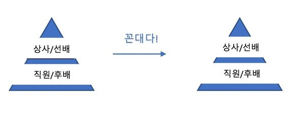
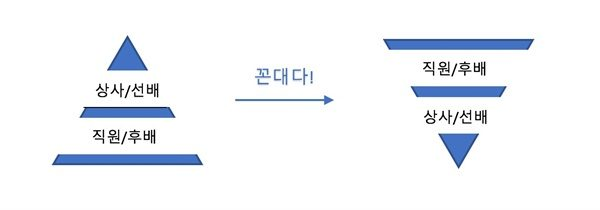
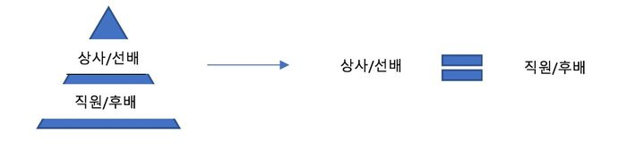

등록일 2019-08-26
'꼰대'라는 단어를 들어본 적이 있는가? 인권인식이 신장되고 권위적인 문화에 대해 사회가 민감해진 현재 '꼰대'라는 말은 엄청난 힘을 갖고 있다. "저 사람은 꼰대다"라는 말 한마디가 불러올 여파로 인해, 전에는 전혀 그런 성격이 아니었던 상사가 직원의 눈치를 보고 교수님이 학생의 사정을 봐주는 사례도 있을 정도이다. 이는 곧 꼰대라는 말이 고발적인 의도를 넘어서서 남용되고 있다는 의미이다. 특히 정당화하고 합리적인 행동을 했음에도 자신의 마음에 들지 않는다는 이유로 윗사람을(나이가 더 많거나 직급이 더 높다는 의미에서의 윗사람) 꼰대라고 치부하는 것은 문제이다.
오늘날의 꼰대 담론은 물리적·상징적 폭력에 대한 거부이자 문화적 저항으로 나타난다. 부당한 것을 부당하다고 말할 수 있게 된 젊은이들로 인해 '꼰대'라는 단어의 사용이 확산 되었으며, 더 많은 사람들이 '꼰대짓'을 거부할 수 있는 힘을 가지게 되었다. 기성세대는 자신들이 당연시했던 문화가 혹시 꼰대짓은 아니었는지 돌아보고 꼰대가 되지 않기 위한 노력을 하게 되었다.
그러나 꼰대라는 단어의 남용은 기성 세대가 꼰대라는 비난을 받는 것을 피하기 위해 정말 필요한 조언도 하지 않고 젊은이들의 눈치를 보는 현상을 낳았고, 청년 세대는 자신이 듣기 싫은 것들을 모두 꼰대짓이라고 규정하며 귀를 닫았다.
결국 꼰대라는 단어의 확산은 지금까지 당연시되었던 권위적인 문화의 문제점을 드러내며 기성세대의 반성을 이끌어냈으나 세대 간의 소통을 가로막는 장애물이 되었고 본질적인 세대 간 문제의 해결로 이어지지 못했다.
그렇다면 꼰대라는 단어가 어떤 방식으로 사용되고 있는지에 대해 알아볼 필요성이 느껴지지 않는가. 꼰대라는 단어의 사용은 크게 소극적인 방식과 공격적인 방식으로 분류할 수 있다.
소극적 방어 기제의 꼰대
현 세대에서 꼰대는 청년층이 자신들의 실패를 외면하고 이를 지적하는 사람들을 지칭하는 혐오표현으로서 가볍게 내뱉는 말이 돼버렸다. 요즘 몇몇 20대들은 상사나 선배를 '꼰대'라고 칭해버리는데, 이는 2가지 양상으로 나누어볼 수 있다.
첫번째 양상은 상사나 선배의 무례한 행동에 대해 면전에서는 감히 불만을 티 내지 못하고 뒤에서 자신의 집단에 속한, 또는 같은 위치에 있는 사람들과 선배를 뒷담화를 하는 것으로 나타난다. 후배로서 또는 직원으로서 당한 부당한 취급에 대해 건강하게 대처하지 못하고 '꼰대'라는 단어를 소극적 방어 기제로 사용한 것이다. 기존의 수직적인 관계, 또는 수직적이지 않더라도 존재하는 나이나 직급에 의한 서열을 적극적으로 타파하려는 의지도 용기도 없이 수직적인 관계에 체념하고 이것이 유지되는 현실 속에서 계속 살아가는 것이다. 뒤에서 자신의 상사나 선배를 '꼰대'라고 부르는 것에서 멈춘다는 의미에서 소극적이며, 직접적으로 고발하는 것을 두려워하고 말 한마디를 통해 자신의 심적 위안을 찾고 동료들로부터 공감을 얻고자 한다는 의미에서 방어 기제이다.
두번째 양상은 상사나 선배의 행동이 무례하지 않음에도 불구하고 심지어는 정당한 행동임에도 불구하고, 자신의 마음에 들지 않는다는 이유로 '꼰대짓'이라고 욕하는 것으로 나타난다. 첫번째 양상에서 그랬듯 여기서도 상사-직원 이라는 서열 그리고 선배-후배라는 서열에 당연히 변화는 없다. 다만 말의 왜곡이라는 무책임한 행위가 더해질 뿐이다. 진정한 충고를 하는 선배에 대해 '꼰대'라고 몰래 부르는, 상대방의 선한 의도를 '꼰대짓'이라고 규정해버리는 것이다. 이는 선배가 뻗어주는 도움의 손길과 훈계를 뿌리치며 사실을 왜곡하거나 없던 일로 덮어버린다는 점에서 심리적 방어기제의 형태를 띠고 있다. 성숙한 방어기제는 적응에 도움을 주지만 말 한마디로 현실을 왜곡하는 수준의 병적인 방어기제는 부적응을 초래할 뿐이다.
또한 이러한 양상 속에서 '꼰대'로 대표되는 혐오 표현은 두려움이나 분노와는 구별되는 양상을 보인다. 두려움과 분노는 잠정적인 위협의 가능성과 실제적 위험과 손해를 기반으로 하는 것과는 다르게, 혐오 표현은 실제적인 위험보다는 '자신이 위험할 수 있다'는 신비적 사고를 기반으로 하는 표현이다. 분노의 경우 부당함으로 인한 피해와 위험성에 반응하여 부당함의 타파를 목표로 하지만 혐오 표현은 실질적인 위험성과는 거리가 매우 먼 상태에서 대상이 사라지기를 바라는 도피와 방기로 이루어졌다는 점에서 반사회적이다.
▲ 소극적 방어 기제의 꼰대 꼰대라는 단어가 소극적 방어 기제로 작용하는 경우를 도식적으로 나타낸 것.ⓒ 강소연
우리는 포스텍 박태준미래전략연구소가 개최한 제5회 2018 대학생·대학원생 공모전 수상작에서도 비슷한 주장을 확인할 수 있다. <우리에게는 휴지(休止) 가 필요하다>라는 제목의 수상작에서는 다음과 같이 서술하고 있다.
"'꼰대'라는 말은 N포세대가 보기에 조금이라도 기성세대의 방식이나 문화가 남아있다고 느끼면 불편을 피하기 위해 사용되는 말이다. 편협한 잣대를 토대로 상대를 재단하려는 구태의연한 사고방식을 가진 사람이라는 의미를 담고 상대방의 의도를 거부하고 폄훼하는 것이다. 이 말로 몇 십년간 몸으로 부딪히며 경험한 시행착오를 후대에 반복하지 않았으면 하는 선의에 하는 이야기도, 순식간에 시대에 맞지 않는 모범답안을 강요한다는 비난을 받을 수 있다."
이는 청년세대에 해당하는 대학생과 대학원생들도 '꼰대'라는 말이 주위에서 소극적인 방어기제로 사용됨을 인지하고 있다는 것을 보여주지 않는가.
A부장은 회식에 대한 억울한 심정을 토로한다. "회식 날 약속이 있으면 그냥 가면 되는데 눈치보고 참석한 뒤 뒤에서 불평하더라. 나보고 어떻게 하란 거냐"고 답답해한다.
우리 주위에서 빈번하게 보이는 '꼰대'라는 단어의 무분별하고 가벼운 사용은 이러한 방식으로 개인의 소극적인 방어 기제로 작용할 뿐이다. 무리한 요구를 하는 상사에 대한 생산적인 대처를 하지 못한 채, 스스로의 위안을 위해 상사를 "꼰대"라고 칭하며 뒷담화를 하는 모습. 선배나 상사의 선한 의도, 그리고 정당한 행동을 "꼰대질"로 규정하며 들으려고 하지 않는 모습. 이는 모두 회피적일 뿐이다.
공격적 방어 기제의 꼰대
'꼰대'라는 단어가 공격적 방어 기제로 작용하는 방식은 고의성을 갖고 선배나 상사를 꼰대로 칭해 이득을 취하고자 한다는 것에서 소극적 방어 기제와 구분된다. 직급이나 나이에 의해 정해진 기존의 관계를 청년세대가 권력을 쟁취하려는 의도로 뒤집고자 한다는 의미에서 이는 공격적이며, 정작 자기 자신은 보호하면서 위 세대에는 해를 가하고자 한다는 의미에서 방어기제이다. 꼰대라는 단어를 남용해 기존의 관계를 뒤집고 부당한 방식으로 권력을 이용하는, 상사나 선배가 아랫세대의 눈치를 보게 만들어버리는 '역꼰대질'인 것이다. 아래 그림에서 역삼각형이 보여주듯, '꼰대'라는 말을 통해 권력 관계를 이용하려고 하는 공격적 방어 기제가 낳는 결과물은 균형이 맞지 않고 언젠가는 무너질 것만 같이 불안정해 보인다.
▲ 공격적 방어 기제의 꼰대 꼰대라는 단어가 공격적 방어 기제로 작용하는 경우를 도식화하여 나타낸 것.ⓒ 강소연
시중에는 '꼰대가 되지 않기'라는 책들이 배포되고 기존 기성세대라고 불리는 층은 꼰대라는 말을 듣지 않기 위해 조심하고 있다. 물론 이것은 분명히 긍정적인 면이 있다. 꼰대라는 단어로써 인권 침해하는 사람을 규정을 하면서 우리 사회의 인권이 신장하게 된 것은 분명한 사실이다. 하지만 학생, 직원, 후배 등의 아래 세대에게 아무런 압박이나 부당한 행동을 가하지 않는 좋은 상사가 누군가의 악한 의도에 의해 꼰대라고 불려 아래 세대의 눈치를 보게 되는 것은 당연히 이와 구분되어야 하는 문제이다.
피라미드에서 수평적 관계로의 변화를 도식화하여 나타낸 것.ⓒ 강소연
위에서 보이는 피라미드에서 수평적인 관계로의 변화, 즉 위 세대와 아래 세대의 목소리가 동등하게 반영되는 사회는 필요하다. 물론 여기서 말하는 동등함은 나이와 직급을 아예 고려하면 안된다는 것이 아니라 의견 반영의 권한에 있어서의 동등함을 이야기한다. 언제까지나 목소리를 낼 수 있는 권한은 모두에게 주어져야한다. 물론 상사와 선배에 대한 기본적인 예의가 지켜지는 선에서 말이다. 동등하게 목소리를 낼 수 있는 기회가 주어지는 것이 상사나 선배를 친구처럼 대할 수 있다는 것을 의미하지는 않다는 것으로 이러한 선을 명확히 설명할 수 있을 것 같다.
"꼰대"라는 단어를 남용하여 오히려 기존의 아래. 세대가 불리는 사람들이 꼰대라고 불리기 싫어하는 심리를 이용하여 위 세대에게 권력을 행사하는, 즉 "꼰대"라는 말을 공격적인 방어기제로 사용하게 되는 것은 위 세대가 조언을 꺼리게 되며 소통이 더욱 단절되게하는 결과를 낳게 된다. 그리고 좋은 상사도, 좋은 교수도, 좋은 선배도 직원을, 학생을, 후배를 위해 무언가를 하려는 노력조차 막아버린다. 끈끈한 관계가 사라지는 것이며 세대갈등을 심화시키는 것이다.
B차장은 울분을 토한다. "갑작스럽게 주말에 일이 터지면 현장에 나가야 하는데 불만을 갖는 신입사원들이 있다. 당연히 해야 할 일을 지시할 때도 부담스러울 때가 많다"고 했다. C 학생은 힘들어서 학생회에서 뛰쳐나가고 싶어한다. 두달 전에 미리, 그리고 정당한 사유를 들어 필수 참석으로 지정한 학과 연례 행사에 대해 한 후배가 자신이 참석하기 싫다는 이유로 "개인적인 일정도 존중해야하는 것 아니냐. 참석하기 싫은 사람은 어쩌라는 거냐. 정말 꼰대다"라고 익명으로 제보를 한 것이다. 스스로는 개인주의를 따른다고 생각하겠지만 사실 이는 개인주의가 변질된 이기주의가 아닌가? 공동체의 구성원으로서 갖고 있는 기본적인 의무조차 외면하고 자신의 무책임함을 "선배가 꼰대다. 상사가 꼰대다"라는 말로 포장하는 청년들의 태도, 그리고 이를 통해 위 세대에게 권력을 행사하려는 행태는 그냥 넘어갈 수 있는 문제가 아니다.
'꼰대'라는 단어는 소극적 또는 공격적 방어 기제로 작용하고 있다. 청년세대, 우리는 언제까지 '꼰대'라는 단어 뒤에 숨어 있을 것인가. 청년세대로서 우리의 태도에 대해, 그리고 주변 사람들의 태도에 대해 돌아볼 때이다.
[출처]
오마이뉴스 19.05.28 09:20l _ 권지현(kwonjane), '우리는 언제까지 '꼰대'라는 단어 뒤에 숨을 것인가'



